TAC Fácil
Organize suas viagens, acompanhe seus custos e saiba o resultado real de cada frete.
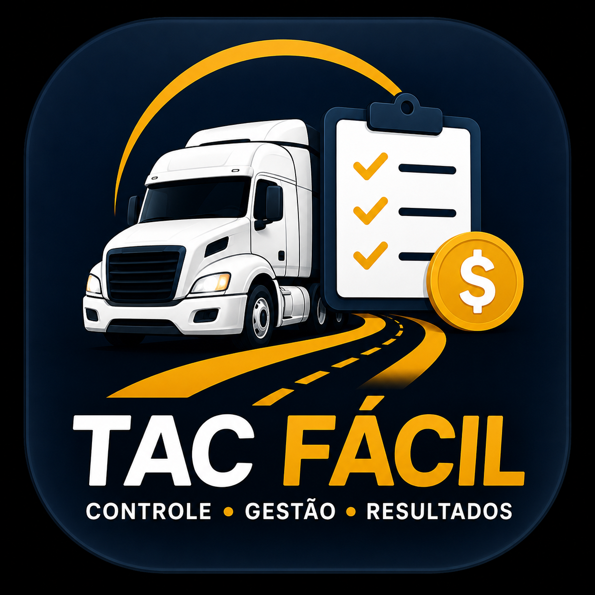
Seu controle de fretes na palma da mão
O TAC Fácil foi desenvolvido para ajudar caminhoneiros autônomos e proprietários de caminhões a reunir, em um só lugar, as informações financeiras e operacionais de cada viagem. Do frete ao combustível, das despesas ao resultado final, o aplicativo transforma lançamentos do dia a dia em uma visão clara do que cada frete realmente deixou.
O que o TAC Fácil faz por você
- ✓ Cadastro e acompanhamento de viagens
- ✓ Frete, adiantamento e saldo a receber
- ✓ Origem, destino, distância e carga
- ✓ Cadastro de transportadoras
- ✓ Controle de combustível por abastecimento
- ✓ Despesas separadas entre caminhão e motorista
- ✓ Categorias e tipos de despesas personalizáveis
- ✓ Cálculo do desgaste do caminhão por quilômetro
- ✓ Comissão/salário do motorista
- ✓ Estimativas de combustível e custos da viagem
- ✓ Atualização da base de cidades do IBGE
- ✓ Relatório detalhado e exportação para PDF
- ✓ Cabeçalho e logotipo personalizados no PDF
- ✓ Tema e parâmetros de cálculo configuráveis
Conheça o aplicativo
As telas foram pensadas para facilitar o uso durante a rotina: informações objetivas, lançamentos rápidos e resumo financeiro da viagem.
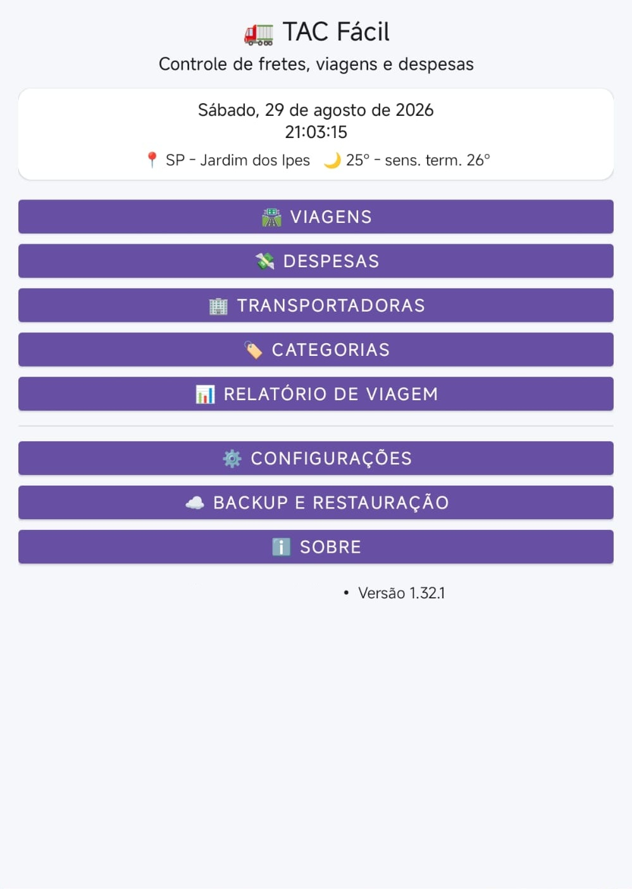
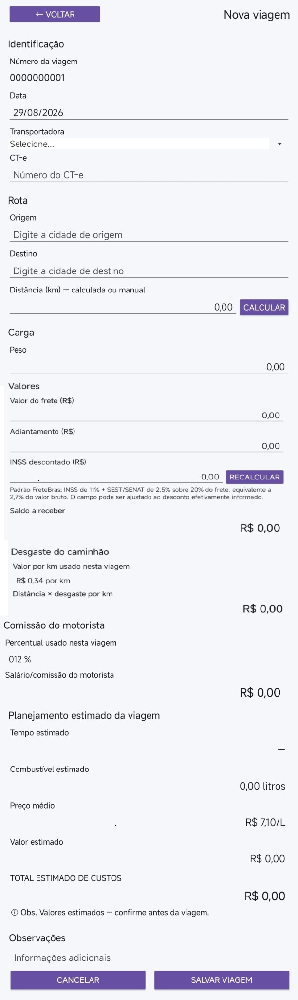
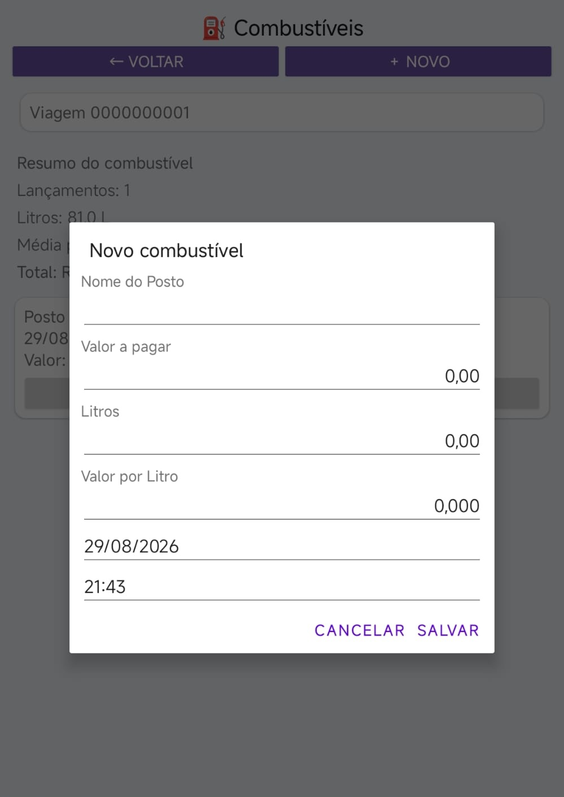
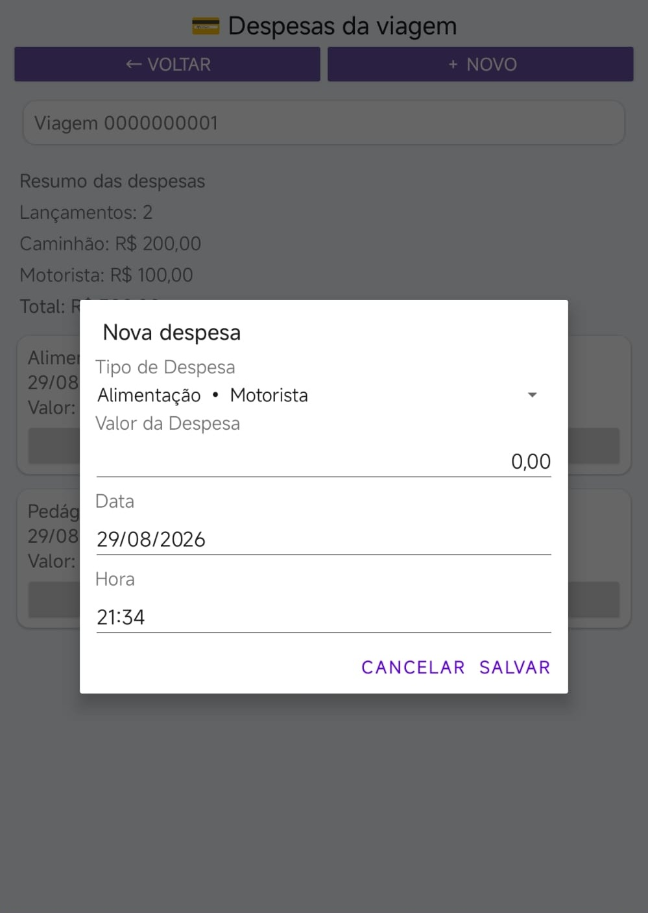
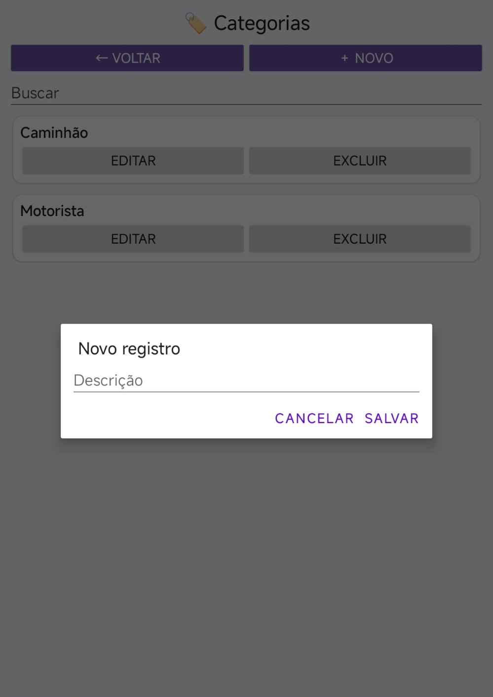
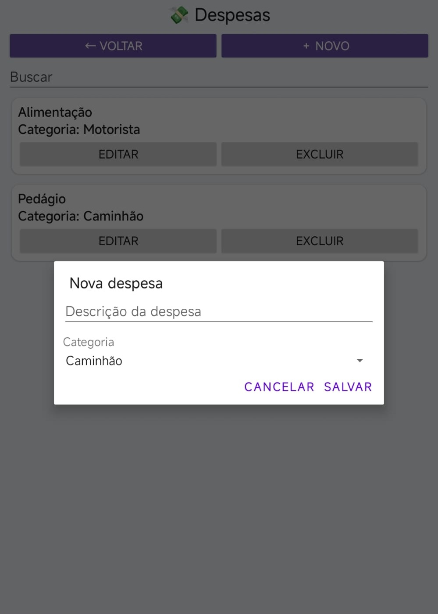
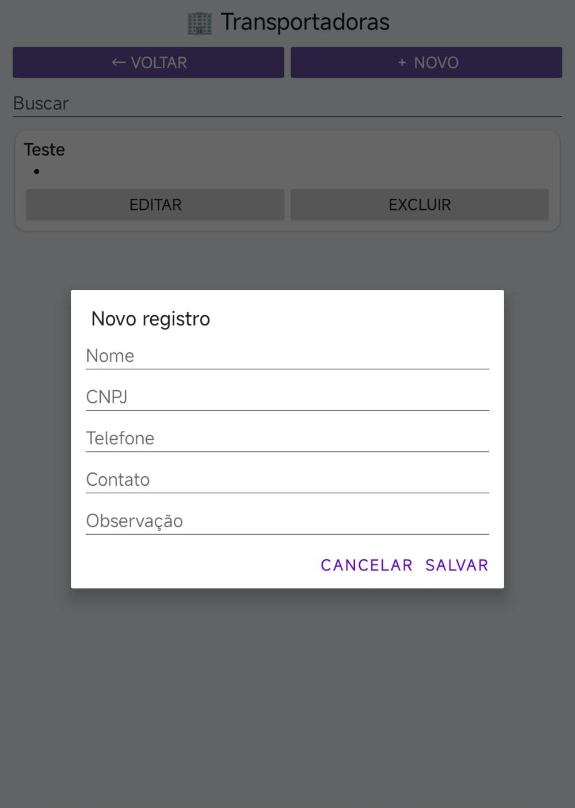
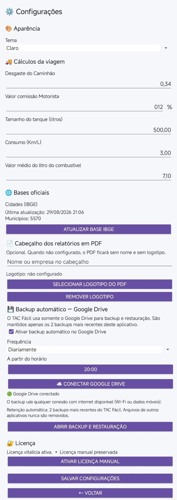
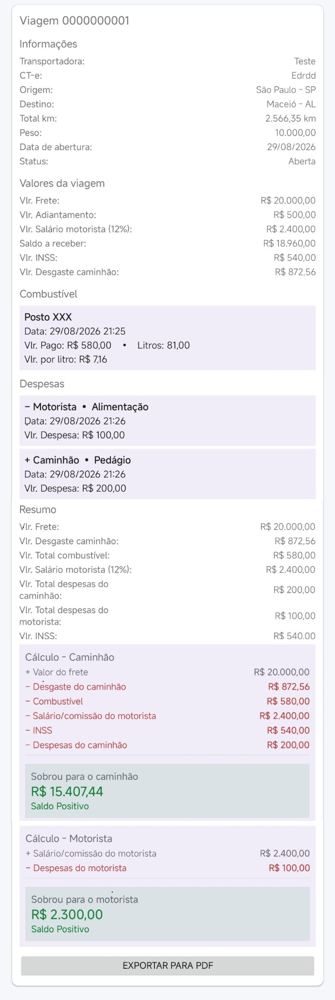
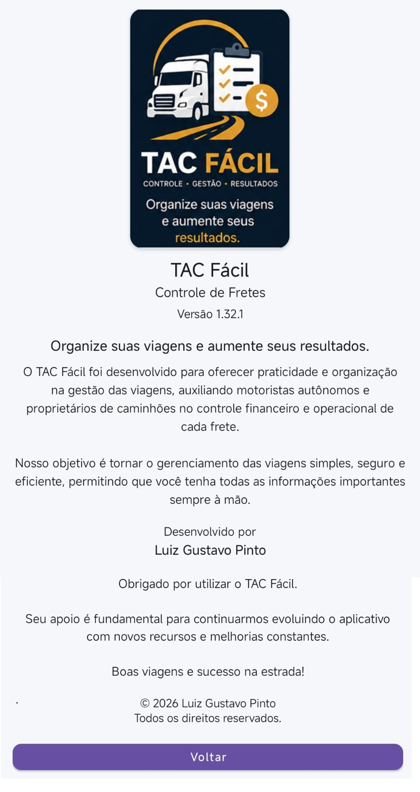
Feito para facilitar sua vida na estrada
O objetivo do TAC Fácil é tornar o controle de cada frete mais simples e útil para a tomada de decisão. Registre o que acontece na viagem, acompanhe os números e tenha um histórico organizado para consultar quando precisar.